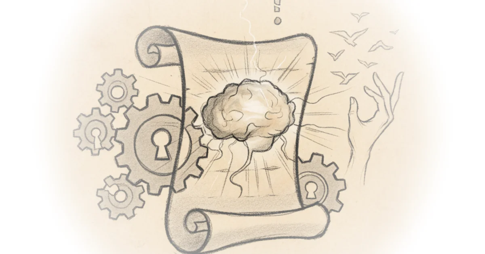

Claude, consciousness, and exit rights Robert Long · ·Sep 26, 2025 · 10 min read · AI & Tech 
Anthropic's model welfare announcement: Takeaways and further reading Robert Long · ·Apr 24, 2025 · 16 min read · AI & Tech
Understand, align, cooperate: AI welfare and AI safety are allies Robert Long · ·Apr 1, 2025 · 13 min read · AI & Tech